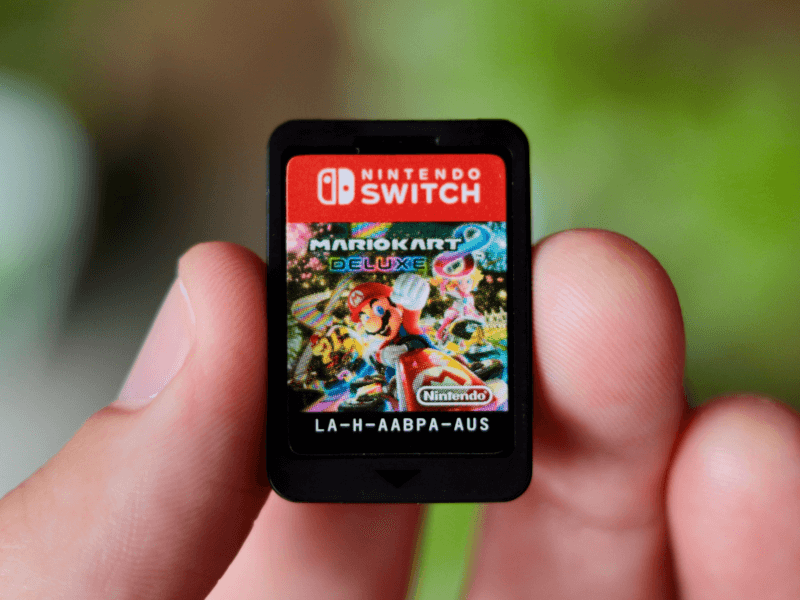
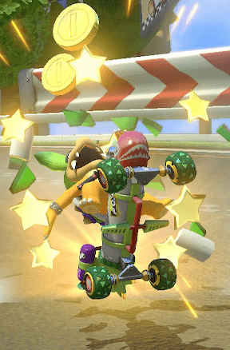

What is the Idaho Mario Kart Club?
Originally founded by Mario Kart master and certified Roy Enjoyer, Ron Orbison, the Idaho Mario Kart Club is an association that allows Mario Kart players from across the state of Idaho to congregate and play Mario Kart together. We do this by holding Mario Kart tournaments and similar events in several different cities that give our club members plenty of opportunities to have fun and even make new friends. Our love of Mario Kart binds us together, no matter if we started with the Switch or if we were fans since the SNES.
Join the Roy Enjoyers Association

Do you love Roy Koopa? How could you not, considering the fact that his statistics make him one of the best performing characters while also maintaining maximum drip? If you feel the same way that we do, join us at the Roy Enjoyers Association!
Play of the Week
This week, there was an excitingly close match between top players Cole Nelson and Trenton Klein, playing as Roy and Iggy. Throughout the race, Cole seemed to be suffering from bad item luck, even being left defenseless from the ruthless spiny shell that allowed Trenton to pass him. At the very last second, Cole was able to steal first place from Trenton by using a well-calculated green shell throw. Good job, Cole!
Leaderboard
- Ron Orbison - 315 pts.
- Cole Nelson - 300 pts.
- Parker Nelson - 245 pts.
- Trenton Klein - 212 pts.
- Michael Trout - 197 pts.